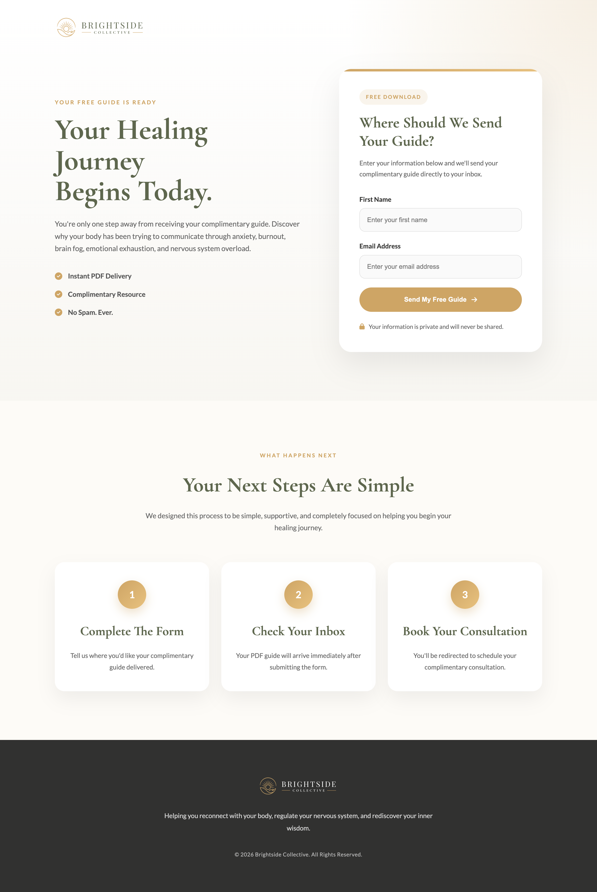
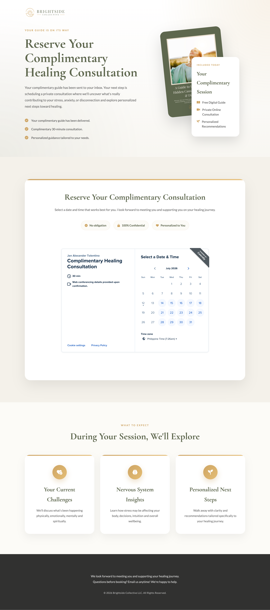
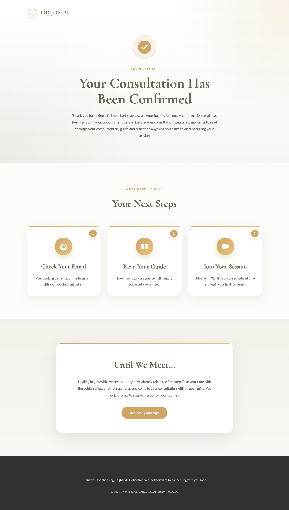

Converting Visitors into Consultation Bookings
After establishing the visual identity, I designed and developed a complete lead generation system that guides visitors from discovering valuable educational content to booking a complimentary healing consultation.
Lead Magnet Landing Page
The first touchpoint of the funnel, designed to educate visitors, build trust, and encourage guide downloads through a clear value proposition and strategic call-to-action.

Click the preview to inspect the complete landing page.
Guiding Visitors Through Each Step
Each page within the funnel was intentionally designed to move visitors one step closer to booking a consultation. Every stage has a clear purpose—from building trust to scheduling an appointment and confirming the next steps.
Consultation Page
Introduces the coaching experience, explains the consultation process, and helps visitors understand what to expect before booking a session.

Booking Page
Allows visitors to conveniently choose an available schedule and submit their booking through an intuitive appointment system.

Confirmation Page
Reassures users that their appointment has been received while providing clear information about what happens next before the consultation begins.
